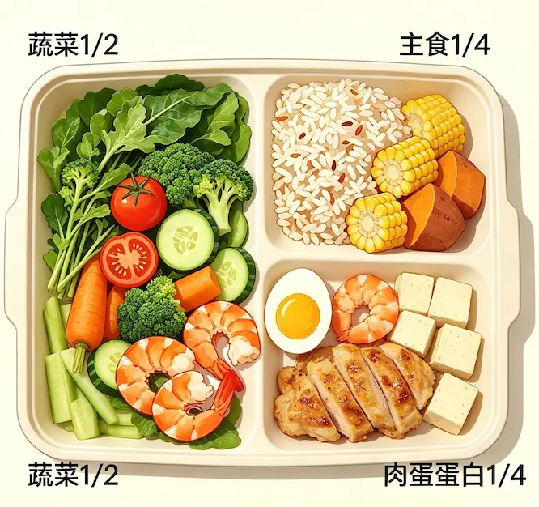

营养本身是一件极其朴素的事，好好吃饭、荤素搭配、三餐规律，就足以支撑人体正常生长、维持身体健康。
完全不懂什么是营养 饮食焦虑
很多人饮食焦虑、乱花钱、盲目进补，被短视频、网红科普等渠道营销洗脑后， 总以为营养是昂贵的、小众的，是需要花大钱去维持，买各类补品才能获得的高端食材。 实际上营养极其朴素，人体所需的营养，随处可见，来自平价普通的家常食材。
营养是什么？
想要彻底摆脱饮食内卷、避开营销收割，就要搞懂营养到底是什么？从哪里来？
四类营养 常见平价食材
人体生长、代谢、免疫、体能维持，只需要常见的四类营养 ———— 蛋白质、维生素、膳食纤维、碳水化合物。 并不神秘、稀有、高贵，生活随处可见的平价食材就能提供。
这四类，是被滋补品和网红食材吹得最狠、最容易收智商税的。其余三类——脂肪、矿物质、水——日常饮食里自然覆盖，国家膳食指南有明确推荐量，这里不展开，但同样不需要任何高价产品。
1. 蛋白质：长身体、抗病
蛋白质是构成身体的基础，
肌肉、骨骼、皮肤、免疫细胞、长个、身体恢复、抗病都靠它。
来源就是最便宜的几样：肉、蛋、奶、鱼虾、豆腐豆浆等豆制品。
被神话的高端滋补品：燕窝、鱼胶、花胶等昂贵胶质蛋白，氨基酸配比是残缺的，花大价钱买入，营养还比不上日常朴素的鸡蛋、牛奶。
2. 维生素：代谢、黏膜、抵抗力
维生素不提供能量，但身体所有的代谢反应都离不开它。缺了，口腔溃疡、皮肤干裂、食欲差、容易累、抵抗力下降。
来源：新鲜应季蔬菜、水果、谷物、豆类。
应季的日常平价果蔬，维生素含量完全够用。
进口、有机、网红高端果蔬，溢价买的是包装、故事、信息差。
3. 膳食纤维：肠道、积食、通便
膳食纤维不被人体消化吸收，促进通便、喂养肠道细菌、稳住血糖、血脂、体重。
肠道不通，积食、便秘、代谢慢、肚子胀。肠胃不好，很大原因就是膳食纤维吃得太少。
来源：绿叶菜、芹菜、香菇、玉米、红薯、燕麦、杂粮。
不需要买进口纤维粉、益生元补充剂、高端膳食纤维饮品。一碗杂粮饭、一盘炒青菜，比什么补剂都实在。
4. 碳水化合物：大脑和身体的能量
碳水是人体最主要、最安全的能量来源。大脑、神经、肌肉、都靠它提供能量。
长期不吃主食、极端低碳、网红代餐，会直接导致：没力气、注意力差、精神萎靡、发育迟缓、代谢变慢。
来源：米饭、面条、馒头、红薯、燕麦、杂粮。
断碳水减肥，不吃主食更健康的说法，违背膳食营养标准。长期执行，伤的是身体底子。
所有刚需营养，平价食材完全覆盖，无需溢价消费
人体生存、发育、健体、养生所需的全部营养，完全可以通过平价家常食材完整获取，不存在必须高价购买、必须滋补进补的营养缺口。
市面上很多普通食材，一旦被商家贴上 儿童专属、高端有机、进口稀缺、养生滋补 等标签，价格翻几倍、几十倍， 但营养成分、吸收率、生理作用，没有任何官方数据优势。
调料 清淡烹饪、少盐少糖少添加剂
简单葱姜蒜、少量盐、酱油，足以完成健康烹饪。调料越繁杂、口味越重、加工越繁杂，身体代谢负担越重。
简单的搭配方式
蔬菜多一点，主食适量，肉蛋蛋白各占一部分。
无需称重、无需精密计算、无需专业领域知识，只需要遵循 三餐规律、不暴饮暴食、不挑食偏食，就已经符合国家健康膳食标准，远超盲目进补、高价养生人群。
下面图片以一个盘子的营养均衡搭配，容易记！
一半蔬菜，主食、蛋白等比各占四分之一。

拆解当代饮食焦虑：全是人为制造的伪需求
所有饮食内卷、营养焦虑、滋补刚需都不是身体需要，是商业营销制造的骗局：
- 把正常生长差异包装成发育缺陷： 孩子高矮快慢、胃口波动、大便偶尔不稳定，只是正常生理波动，并非营养不良。营销刻意无限放大，制造不调理就落后的恐慌。
- 刻意贬低家常饭菜： 营销话术抹黑普通三餐营养单一、吸收差，鼓吹必须进口、定制、专属辅食，完全违背国家膳食指南对家常荤素搭配的科学认定。
- 制造攀比式自卑收割： 渲染别人高端滋补、你家常敷衍、不孝、活不起、穷的落差感，让人产生低人一等的错觉，被迫跟风消费，助长营销收割。
滋补品骗局 老经验适配旧时代，不适合当下
很多人疑惑：为什么鱼胶、燕窝、阿胶等滋补品说法可以代代相传、人传人？
不是有效，是时代物资匮乏导致的特殊历史遗留认知。
在优质蛋白完全稀缺的年代，猪皮、边角胶质、水产干货这类今天没人看得上的劣质蛋白来源，已经是普通人唯一能接触到的动物营养。
哪怕吸收率再低、营养残缺，对长期营养归零的身体来说，这点蛋白，就是唯一的补给，依然能起到补救作用。
人们看到的吃了身体好转，就以为这东西神了，忽略了本质是身体极度缺营养、急需一点蛋白兜底。
久而久之，这些被丢弃，捡来应急充饥的边角料，被口口相传，再经商家为了利益疯狂鼓吹，硬生生传成了神话为强身、养颜、补气血的秘方良药。
甚至夸张到演变为包治百病的神物，价格炒成天价，商家稳赚不赔，利润丰厚。
先辈们解决了最严重的温饱问题。今天的物质丰富，三餐肉蛋充足已不是稀罕物、热量过剩、营养不均。 旧时代的应急劣质蛋白，今天不仅没用，弊端反而完全暴露：
- 仅有味道，无特殊营养： 炖汤只有鲜味口感，有效营养微乎其微，无法替代肉蛋奶；
- 高嘌呤伤肾： 胶质干货、陈年滋补食材炖煮嘌呤极高，长期进补加重肾脏负担，尤其不利于脾胃虚弱、肾功能不好的人群；尿酸排不出去，大量积压，诱发痛风，再往下走就是肾衰竭、尿毒症，绑在机器上透析度日，得多惨；
- 市面三无乱象： 散装滋补干货普遍无生产日期、无批次、无产地、无质检、真假难辨、霉变隐患极大；根本无法知道买到的东西是什么，从哪里来的，放了多久，怎么制作出来的；
- 永久不过期是伪科学： 任何食品食材都有保质期，长期存放只会滋生霉菌、有害物质。喝下去的，不是养生，是毒。
朴素家常 顶级营养
人类繁衍几千年，没有网红补品、没有高端食材、没有精致调理，依然生生不息。国家整套膳食标准也反复证明：营养的核心是均衡、规律、干净。
市面上的昂贵、精致、小众的高端食材和滋补品，根本就不属于日常刚需，纯粹的攀比噱头。
用来彰显独特、标榜稀有、营造身份优越感，满足社交虚荣。
比的就是你吃不起，你就不如我，低人一等的落差感、满足虚荣而已。